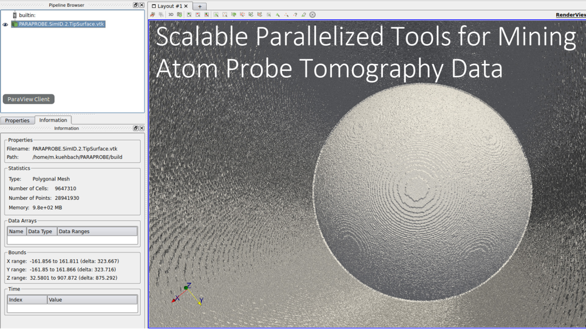

PARAPROBE is an MPI/OpenMP-parallelized open source back end tool for
running strong scaling analyses of Atom Probe Tomography (APT) data.
The tool is developed by Markus Kühbach, a scientific computing Postdoc
with the Max-Planck BiGmax’s research network at the Max-Planck Institut,
für Eisenforschung (MPIE) in Düsseldorf.
Please feel free to utilize the tool. In doing so, feel equally free
to suggest me any improvements or desirable analysis features
you find useful to add into PARAPROBE.
1. Getting started¶
2. Utilize productively¶
- XML Control File Settings
- Questions?
- Input
- Analysis mode
- Reconstruction
- Tip surface reconstruction
- Analysis Tasks
- Barr et al reconstruction parameter
- Smart pruning prior surface reconstruction
- Crystallographic analysis
- Descriptive spatial statistics parameter
- Clustering analyses parameter
- Tessellation analyses
- Visualization options
- Synthetic tip
- Performance
- Program execution